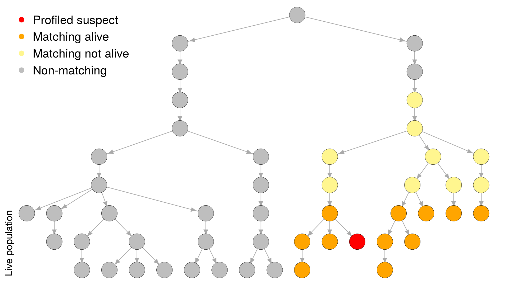

malan: MAle Lineage ANalysis
Repository link »
PDF link »
View review issue »

Published: 07 May 2018
Andersen, (2018). malan: **MA**le **L**ineage **AN**alysis. Journal of Open Source Software, 3(25), 684. https://doi.org/10.21105/joss.00684
Summary
Forensic DNA profiles from the Y-chromosome are valuable when there is a mixture of male-source and female-source DNA, and interest centres on the identity of the male source(s) of the DNA (as only males have Y-chromosomes). This happens for example when a male has been accused of assaulting a female.
The problem of evaluating evidential weight is even more challenging for Y-profiles than for autosomal profiles that are based on the non-sex chromosomes. At the core of the weight of evidence for autosomal short tandem repeat (STR) profiles used in forensic genetics is the match probability, which is the conditional probability that a particular individual X has a matching profile, given that the queried contributor, Q, has it (Steele and Balding 2015). Matching at a single, autosomal STR allele is relatively common: typically a few percent of individuals from the same population share a given allele. The probability of matching is increased when X is a relative of Q, but for typical population sizes most of the individuals sharing a given allele are not closely related to Q.
However, unlike for autosomal profiles, Y-profile matches are due to patrilineal relatedness that is typically too remote to be recognized, but close compared with the relatedness of random pairs from the population (Andersen and Balding 2017). This was described by (Andersen and Balding 2017) that also propose a way to interpret a matching Y-chromosomal profile given these properties. The proposed interpretation was based on the distribution of the number of males with Y-profile matching that of the queried contributor Q. Analyses in (Andersen and Balding 2017) were performed by a simulation model to approximate the distribution of the number of men in a population with matching Y-profiles. Key parameters of the model include the STR locus mutation rates, the variance in reproductive success (Andersen and Balding 2017) (VRS), and the population growth rate. The simulation model was implemented and made available in the easy-to-use open-source software presented in this paper: malan (MAle Lineage ANalysis).
The malan software is made available as an R (R Core Team 2018) package with extensive use of C++ for efficient computations via Rcpp (Eddelbuettel and Balamuta 2017). This software was used for the analyses performed in (Andersen and Balding 2017). The simulation model allows for flexible simulations by first simulating a genealogy (with population sizes at each generation specified by a vector) with different parameters as described by (Andersen and Balding 2017). A forensic Y-chromosome profile typically consists of the allele at between 15 and 30 STR loci (Butler et al. 2005) and is often referred to as a Y-STR haplotype. In the simulated genealogy, the malan software makes it possible to impose Y-STR haplotypes in different ways.
The malan software makes it possible to query the population in multiple ways. For example to count the number of males in the population with a certain Y-STR haplotype. Or obtain the distribution of number of meioses between a queried contributor and the individuals in the population with a matching Y-STR haplotype.
The documentation of malan consists of manual pages for the various available functions, articles describing how to perform contiguous analyses (vignettes), and unit tests.
I would like to thank David J Balding for helpful discussions.
-
References
Andersen, MM, and DJ Balding. 2017. “How convincing is a matching Y-chromosome profile?” PLOS Genetics 13 (11):e1007028. https://doi.org/10.1371/journal.pgen.1007028.
Butler, JM, AE Decker, MC Kline, and PM Vallone. 2005. “Chromosomal Duplications Along the Y Chromosome and Their Potential Impact on Y-STR Interpretation.” Journal of Forensic Sciences 50 (4):853–9. https://doi.org/10.1520/JFS2004481.
Eddelbuettel, D, and JJ Balamuta. 2017. “Extending R with C++: A Brief Introduction to Rcpp.” PeerJ Preprints 5 (August):e3188v1. https://doi.org/10.7287/peerj.preprints.3188v1.
R Core Team. 2018. R: A Language and Environment for Statistical Computing. Vienna, Austria: R Foundation for Statistical Computing. https://www.R-project.org/.
Steele, CD, and DJ Balding. 2015. Weight of Evidence for Forensic DNA Profiles. 2nd ed. Wiley. https://doi.org/10.1002/9780470867693.